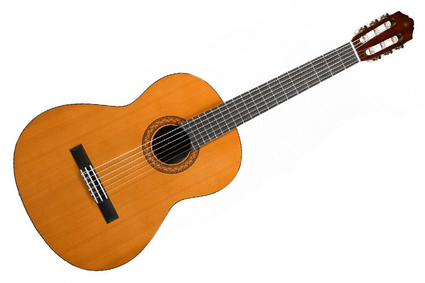

Lo que me gusta
Por el momento les voy a dejar un popurrí de cosas que me encantan en versión fotos. Más adelante buscaré fotos de momentos random e imperdibles de mi existencia.
Mi corazón tiene un lugar especial para los gatitos, el chocolate, otras cosas dulces y más animalitos. Me gusta tocar la guitarra (aunque no lo haga muy bien) y cantar (aunque lo haga aún peor).
Gatitos
Chocolates

Música
Lo que NO me gusta
Si pienso en cosas que no me gustan se me vienen a la mente rápidamente todo lo relacionado a las princesas, desde el color rosita hasta las rosas en estampados.
Y si vamos con lo que me desagrada, es la falta de empatía en las personas para que cada uno viva su vida a su gusto (siempre que no dañe a terceros).